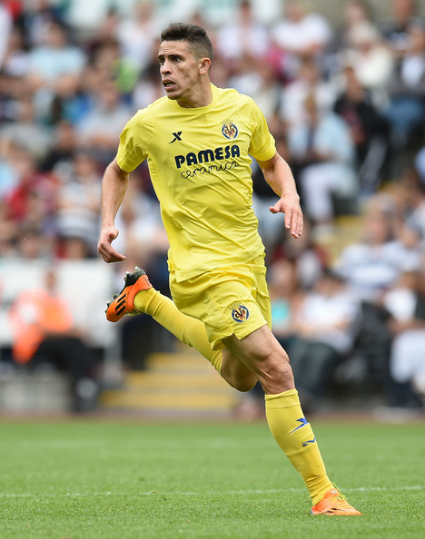
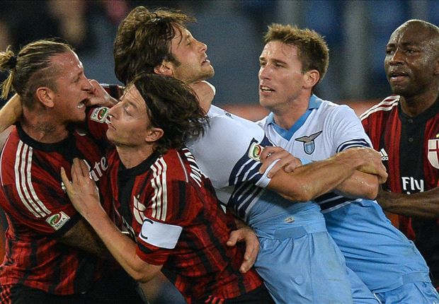
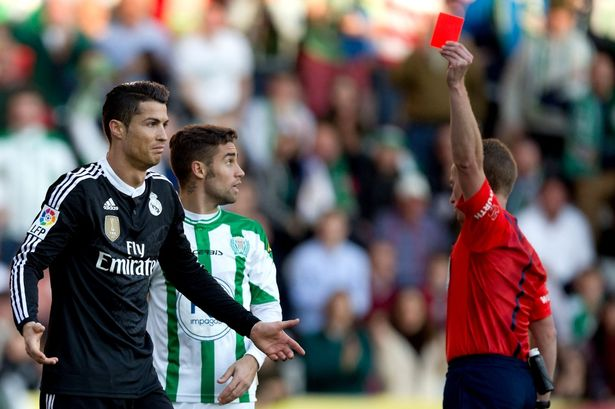

Latest News
Arsenal are 'very close' to sealing a deal with Gabriel Paulista
Arsenal are on the verge of completing their second signing of the January window. Arsenal have been granted a work permit for Villarreal defender Gabriel Paulista and are hoping to confirm his signing in the next 24 hours.The La Liga club have said an agreement has been reached in principle for the £15m-rated 24-year-old. Gunners striker Joel Campbell, 22, is moving the opposite way on loan, according to the Spanish club. Arsenal boss Arsene Wenger has said the uncapped Brazilian has "good potential" and could adapt to English football.
Mexes handed four-game ban after Lazio dismissal
The defender has been slapped with a heavy suspension following his clash with Stefano Mauri in AC Milan's weekend defeat. AC Milan coach Filippo Inzaghi will have to make do without the services of Philippe Mexes in the upcoming weeks after the Frenchman was handed a four-game ban for his red card in the 3-1 Serie A loss against Lazio.The centre-back was shown a straight red card by referee Paolo Mazzoleni after grabbing Stefano Mauri by his throat in the closing stages of the game, only to then completely lose his temper and proceed to scrap with both Mauri and Lorik Cana.
Mexes apologised for his behaviour on Monday, but has nonethelessbeen slapped with a heavy suspension for his actions.
Cristiano Ronaldo shown red card in Cordoba
The world's best player was shown a red after he PUNCHED, KICKED and SLAPPED the Cordoba defender, Edimar. Madrid won through a late Gareth Bale penalty, Ronaldo apologised for his uncharacteristic actions on Twitter. He wrote: "I apologise to every and especially Edimar for my thoughtless act in the game today." Should Cristiano Ronaldo be banned for one-game or more? The verdict will be released on Wednesday 28th January 2015. 
To see the latest highlights, click here.